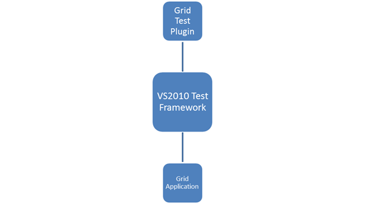

Essential Grid WF now supports automated UI testing with VS 2010 Coded UI technology. The Grid Test plugin blends in with the automated UI testing framework in VS 2010 by implementing the following classes:
· UITechnologyManager
· UITestPropertyProvider
· UIActionFilter
The architectural diagram is as follows:

Figure 489: Architectural Diagram
· Grid Test Plugin implements the necessary details to communicate with the VS 2010 Test Framework.
· The Grid application host runs with a .NET Remoting channel hosted internally to communicate with the Test plugin through an interface. The data is then channeled across the VS 2010 Test Framework, to identify the Cells and Grid controls.
Use Case Scenarios
You can create a Coded UI Test with Essential Grid Windows. The following example shows the implementation of the feature.
Perform the following initial steps before creating the Coded UI Test project:
1. Deploying Extension assembly
2. Prepare the Grid sample application
3. Write UI tests using VS 2010
4. Testing the application with generated Coded UI Tests
 Preparing the Grid Application
Preparing the Grid Application
Creating Unit Tests with VS2010